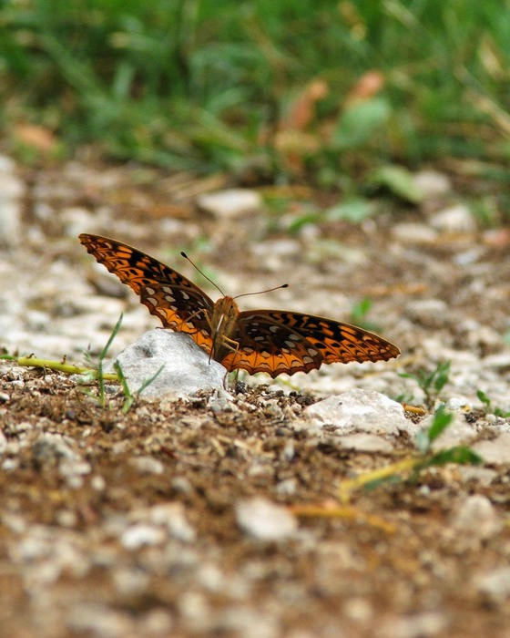

Next Photo
-
Vote
Butterfly On The Rock
This same butterfly I chased around posed on the rocks for my camera. Lots of depth in the field. I made the rock stand out a bit more in paint shop.
The colors in this photo make neat bands aswell. Look at the entire thing.
More...
ID: 41
Title: Butterfly On The Rock
Description: This same butterfly I chased around posed on the rocks for my camera. Lots of depth in the field. I made the rock stand out a bit more in paint shop.
The colors in this photo make neat bands aswell. Look at the entire thing.
Keywords: butterfly rock
Hidden: n
Date added: Tue May 30 13:46:38 CDT 2006
Date taken: Tue May 30 12:19:03 CDT 2006
Camera: FUJIFILM.FinePix S5100 .
Resolution: 1363x1703
Mode: 0
Shutter speed: 812/100
Flash: 16
Exposure time: 10/2800
Iso: 100
Metering: 5
Aperture: 430/100
Focal length: 3450/100
Artist: NathanielGuy Mahieu
Copyright: 2006 NathanielGuy Mahieu
Views: 1766